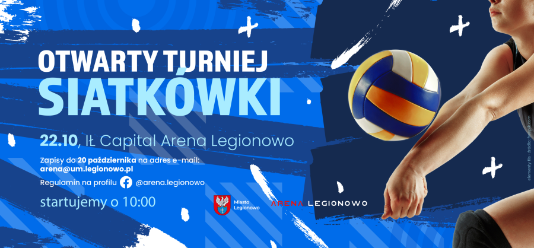
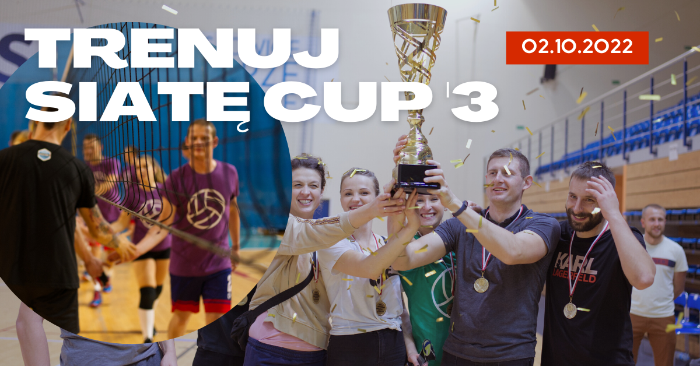

Marzysz o sportowej rywalizacji, dobrej zabawie i zdrowej dawce adrenaliny? Mamy dobrą wiadomość! Właśnie startują zapisy do "Amator Volley Cup", lokalnego turnieju siatkówki przeznaczonego dla wszystkich pasjonatów i amatorów tej dyscypliny.

Organizatorzy zapraszają drużyny, które chcą sprawdzić swoje umiejętności i spędzić czas w sportowej atmosferze. To idealna okazja, aby zebrać znajomych, zgrany zespół z pracy czy po prostu miłośników siatkówki i stanąć do walki o puchar turnieju.